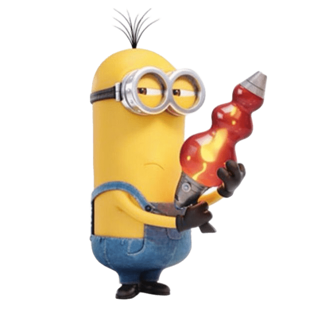
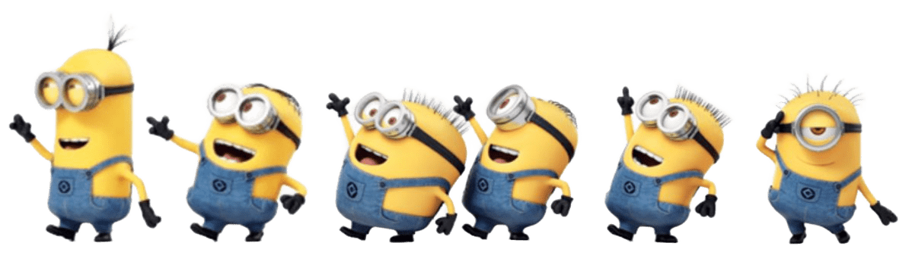
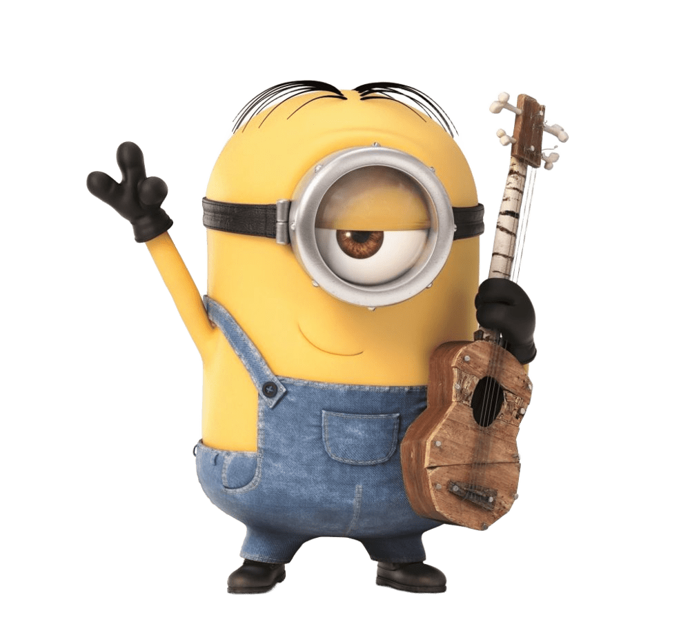
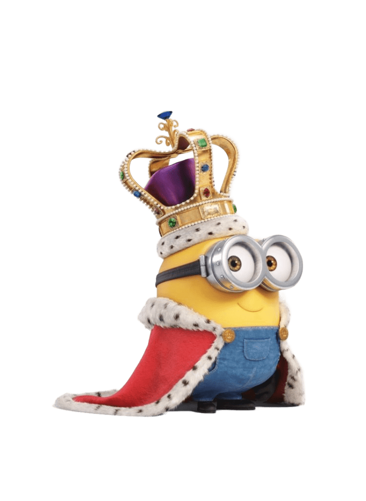

Kevin
É alto, responsável e costuma liderar os outros Minions.
Bello! Bem-vindo ao mundo dos Minions!
Os Minions são personagens amarelos muito divertidos, conhecidos por sua linguagem engraçada, seu jeito atrapalhado e sua paixão por bananas. Eles aparecem nos filmes Meu Malvado Favorito e Minions.


É alto, responsável e costuma liderar os outros Minions.

É divertido, gosta de música e tem um jeito descontraído.

É pequeno, fofo e muito inocente.